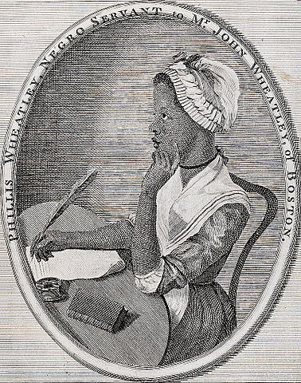
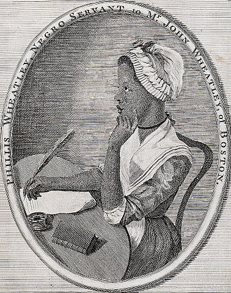

The desire to control and contain the natural world was an important goal in early America for both white and non-white writers. Mastery of the natural world was sought through multiple means including physical alteration of the land and organizing nature through systems of codified knowledge. This desire for mastery frequently resulted in a tension between subjectivity and objectivity, between seeing the earth and nonhuman animals as objects to be dominated and allowing them to have their own subjectivity. For example, as the narrator of Crevecoeur’s Letters from an American Farmer, James speaks of the natural world in terms of possession, ownership, and the need for cultivation by human hands. In Notes on the State of Virginia, Jefferson writes in Query VI: “The bees have generally extended themselves into the country, a little in advance of the white settlers. The Indians therefore call them the white man’s fly, and consider their approach as indicating the approach of the settlements of the whites.” The bees become harbingers of change, both ecological and social. They attest to the reality that it is impossible to entirely separate humans from nonhuman nature, and this inseparability can prove both advantageous and detrimental. Similarly, Jefferson’s Notes presents readers with several examples of how natural and cultural forces intersect and work in tandem to shape his idea of American identity.
Mastery and knowledge of the natural world was also a valuable source of authority and agency for Native Americans and African Americans. Their knowledge of the natural world, particularly herbal medicines and remedies, was highly sought after by European Americans. In Jane Colden’s botanic manuscript, several entries contain information about the medicinal properties of plants, occasionally mentioning that these cures have been taught by Native Americans. Similarly, William Bartram in Travels shows a reliance on Native American knowledge of nature in order to survive and gather information and specimens from the wilderness.
Knowledge of Western scientific understandings of the natural world also provided African Americans with a way of claiming citizenship by demonstrating their cognitive abilities. For example, in “Thoughts on the Works of Providence,” Phillis Wheatley blends scientific knowledge with a pastoral ideal of nature. In addition to her engagement with pastoral imagery in this poem, Wheatley’s display of scientific knowledge, including astronomy and pathology, testifies to Wheatley’s human subjectivity. In “To the University of Cambridge, in New-England,” Wheatley blends scientific study with religious imagery. Wheatley embraces the material world and scientific study as a way of unlocking the world’s secrets, which she figures in religious language.
Bartram, William. Travels through North and South Carolina, Georgia, East and West Florida.
Colden, Jane. Botanic Manuscript of Jane Colden.
Crevecoeur, J. Hector St. John de. Letters from an American Farmer.
Jefferson, Thomas. Notes on the States of Virginia.
Marrant, John. A Narrative of the Lord’s Wonderful Dealings with John Marrant, a Black.
Wheatley, Phillis. Poems on Various Subjects, Religious and Moral.
Cronon, William. Changes in the Land: Indians, Colonists, and the Ecology of New England. New York: Hill and Wang, 1983. Print.
Fett, Sharla M. Working Cures: Healing, Health, and Power on Southern Slave Plantations. Chapel Hill: U of North Carolina P, 2002. Print.
Finseth, Ian. Shades of Green: Visions of Nature in the Literature of American Slavery, 1770-1860. Athens: Georgia UP, 2009. Print.
Glave, Diane D. Rooted in the Earth: Reclaiming the African American Environmental Heritage. Chicago: Chicago Review P, 2010. Print.
Grove, Richard H. Green Imperialism: Colonial Expansion, Tropical Island Edens, and the Origins of Environmentalism, 1600-1800. Cambridge: Cambridge UP, 1995. Print.
Marx, Leo. The Machine in the Garden: Technology and the Pastoral Ideal in America. New York: Oxford UP, 1964. Print.
Nash, Roderick. Wilderness and the American Mind. New Have: Yale UP, 2001. Print.
Parrish, Susan Scott. American Curiosity: Cultures of Natural History in the Colonial British Atlantic World. Chapel Hill: U of North Carolina P. 2006. Print.
Regis, Pamela. Describing Early America: Bartram, Jefferson, Crevecoeur and the Influence of Natural History. Philadelphia: U of Pennsylvania P, 1992. Print.
Ruffin, Kimberly H. Black on Earth: African American Ecoliterary Traditions. Athens: U of Georgia P, 2010. Print.
Smith, Kimberly K. African American Environmental Thought: Foundations. Lawrence, Kansas: UP of Kansas, 2007. Print.
Smith, Theophus Harold. Conjuring Culture: Biblical Formation of Black America. New York: Oxford UP, 1994. Print.
Sweet, Timothy. American Georgics: Economy and Environment in American Literature, 1580-1864. Philadelphia: U of Pennsylvania P, 2001. Print.
Wulf, Andrea. Founding Gardeners: The Revolutionary Generation, Nature, and the Shaping of the American Nation. New York: Knopf, 2011. Print.
 
